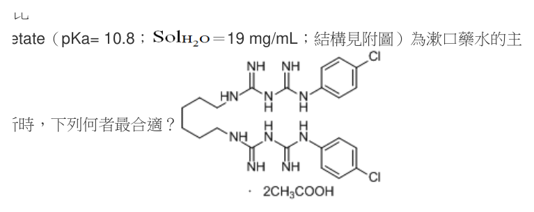
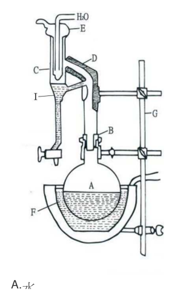
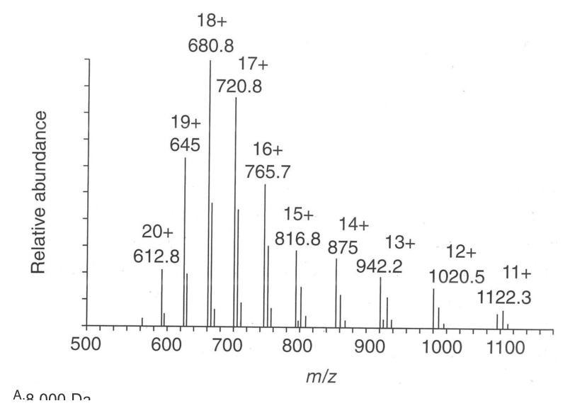

106 年第 2 次藥師藥物分析與生藥學試題與答案
這一頁是民國 106 年第 2 次藥師藥物分析與生藥學的整份歷屆試題，共 80 題，題目與標準答案出自考選部「國家考試試題及測驗式試題答案」開放資料，其中 75 題附有詳解。以下逐題列出題幹、選項與答案；要計時作答或記錄成績，請用線上練習。
考選部原始場次代碼：106100
線上作答這一科 →
全部 80 題
第 1 題
汞化合物之溶液通入硫化氫，即生成何種顏色之沉澱？
- （A）黃色
- （B）猩紅色
- （C）白色
- （D）黑色
答案：（D）
詳解與考點
正解：汞離子溶液通入 H2S 後形成難溶的 HgS；在此經典鑑識反應中，新生成的硫化汞沉澱呈黑色，故選 D。
A：黃色不是此條件下 HgS 沉澱的觀察結果，不能以其他金屬硫化物的顏色代入。
B：猩紅色可聯想到朱砂型 HgS 的固體顏色，但由汞化合物水溶液通入 H2S 所得的沉澱以黑色判讀。
C：白色沉澱不符合 HgS 的顏色特徵；加入硫化物後形成的並非白色汞鹽。
本題考點：硫化物沉澱（sulfide precipitation）——金屬離子遇 S2− 時，須以生成鹽的溶解度與顏色判讀；汞的定性分析（qualitative analysis of mercury）——HgS 的黑色沉澱是鑑識汞化合物的基本觀察。
第 2 題
下列何種溶劑組合在室溫下會分成兩相？
- （A）water－ethanol
- （B）water－tetrahydrofuran
- （C）methanol－n-hexane
- （D）methanol－chloroform
答案：（C）
詳解與考點
正解：methanol 為極性質子溶劑，而 n-hexane 為非極性烴類；兩者極性與分子間作用力差異大，在室溫下互溶性不足而分成兩相，故選 C。
A：water 與 ethanol 可藉氫鍵充分互溶，不會形成兩相。
B：water 與 tetrahydrofuran 具有良好互溶性，不能作為兩相溶劑組合。
D：methanol 與 chloroform 可形成均相混合物，與 methanol/n-hexane 的極性落差不同。
本題考點：溶劑互溶性（solvent miscibility）——先比較極性與能否形成相容的分子間作用力，再判斷是否分相；極性匹配原則（like dissolves like）——極性醇類與非極性烴類的組合是優先懷疑兩相的線索。
第 3 題
原子核的自旋量子數（spin quantum number）為下列何者時，無法利用核磁共振光譜進行分析？
- （A）0
- （B）1/2
- （C）1
- （D）3/2
答案：（A）
詳解與考點
正解：核磁共振需要原子核具有非零自旋與相應磁矩；自旋量子數 I = 0 時沒有可供共振的核磁矩，無法以 NMR 分析，故選 A。
B：I = 1/2 為非零自旋，原子核具有磁矩，可產生 NMR 訊號。
C：I = 1 同樣是非零自旋，仍具核磁性，並非無法進行 NMR 的條件。
D：I = 3/2 亦為非零自旋；雖可能有較複雜的鬆弛或線形表現，但可以進行 NMR 分析。
本題考點：核自旋（nuclear spin）——只有 I ≠ 0 的核具有核磁矩，才可能與外加磁場交互作用；核磁共振活性（NMR activity）——先查自旋是否為零，再討論訊號的靈敏度或線形。
第 4 題
四種化合物結構分別為：①CH3(CH=CH)5CH3 ②CH3(CH=CH)6CH3 ③CH3(CH=CH)4CH3 ④CH3 (CH=CH)3CH3此四種化合物之λmax出現在275 nm、310 nm、342 nm與380 nm，則化合物③之λmax最可能出 現在何處？
- （A）380 nm
- （B）342 nm
- （C）310 nm
- （D）275 nm
答案：（C）
詳解與考點
正解：共軛雙鍵數越多，π→π* 躍遷能隙越小，λmax 便越往長波長移動。四者的共軛雙鍵數依序為④ 3、③ 4、① 5、② 6，故 275、310、342、380 nm 也依此順序配對；化合物③為 310 nm，故選 C。
A：380 nm 對應共軛最長的化合物②，有 6 個共軛雙鍵，不是化合物③。
B：342 nm 對應有 5 個共軛雙鍵的化合物①；化合物③少一個共軛雙鍵，應出現在較短波長。
D：275 nm 對應共軛最短的化合物④，有 3 個共軛雙鍵；化合物③的共軛長度較長。
本題考點：共軛與吸收波長（conjugation and λmax）——比較共軛系統時，雙鍵數增加即預期 λmax 紅移；π→π* 躍遷（π→π* transition）——能隙變小時吸收能量下降，換成波長即為數值增加。
第 5 題
配合LC-MS離子化之需求，電灑法（ESI）、快速原子撞擊法（FAB）及大氣壓化學游離法（APCI）三種LC- MS離子源中，適用的液相層析流速由快到慢之順序為何？
- （A）ESI＞FAB＞APCI
- （B）FAB＞APCI＞ESI
- （C）APCI＞ESI＞FAB
- （D）ESI＞APCI＞FAB
答案：（C）
詳解與考點
正解：LC-MS 的離子源耐受液相流速由快到慢為 APCI、ESI、FAB。APCI 先將較大流量的霧化液滴轉為氣相離子，ESI 適合較低流量的帶電液滴，FAB 可接受的連續液流最小，故選 C。
A：此順序把 ESI 排在 APCI 之前，忽略 APCI 對較高液相流速的相容性；FAB 也不應排在 ESI 與 APCI 之間。
B：FAB 並不適合三者中最快的液相流速，將它置於最前與其離子化方式不符。
D：ESI 雖比 FAB 能配合較高流速，但仍低於 APCI；兩者的相對位置被顛倒。
本題考點：LC-MS 離子源流速相容性（LC-MS source flow compatibility）——比較流速時看霧化與離子化所在相態，APCI 通常可承受最高流量；電灑游離（electrospray ionization）——ESI 依賴帶電液滴，流量增加會使去溶劑與離子傳輸更受限制。
第 6 題
下列烯類化合物中劃線之鍵結，何者在紅外光光譜之吸收強度最高？
- （A）C=C–C=O
- （B）C=C–C=C
- （C）C=C–C–C
- （D）C=C–C
答案：（A）
詳解與考點
正解：IR 吸收強度取決於振動時偶極矩的改變；（A）的 C=C 與 C=O 共軛，carbonyl 使烯鍵電子分布更極化，該鍵伸縮時的偶極矩變化最大，因此吸收強度最高，故選 A。
B：C=C-C=C 雖有共軛，但沒有相鄰的強極性 C=O 使所問烯鍵明顯極化，吸收強度較（A）低。
C：C=C-C-C 為一般烯鍵，振動造成的偶極矩改變不及與 carbonyl 共軛的烯鍵。
D：C=C-C 亦不帶相鄰 C=O；鏈長或取代差異不能取代 carbonyl 對烯鍵極化的影響。
本題考點：IR 吸收強度（IR absorption intensity）——判斷強弱時看振動前後偶極矩改變，不只看是否有雙鍵；共軛極化效應（conjugative polarization）——相鄰 carbonyl 可使共軛烯鍵的振動偶極變化增加，因而增強吸收。
第 7 題待校
Procaine在下列何種pH值溶液中吸光值最小？（Procaine結構為 ）
- （A）1
- （B）7
- （C）8
- （D）10
答案：（A）
第 8 題
下列何者在氫核磁共振光譜中的化學位移（ppm）最大？
- （A）CH4
- （B）C6H6
- （C）CH3I
- （D）CH2Cl2
答案：（B）
詳解與考點
正解：C6H6 的芳香環電流會使環上氫明顯去屏蔽，訊號位於最下場的芳香區；相較於脂肪族與鹵甲基氫，其化學位移最大，故選 B。
A：CH4 的氫受周圍電子屏蔽程度高，屬最上場的脂肪族訊號，不會有最大的 chemical shift。
C：CH3I 受 iodine 的誘導效應影響而去屏蔽，但仍沒有 benzene 芳香環電流造成的下場程度。
D：CH2Cl2 的氫受兩個 chlorine 去屏蔽，chemical shift 大於一般烷烴；但其位置仍低於 C6H6 的芳香氫。
本題考點：化學位移（chemical shift）——訊號越去屏蔽，ppm 越大且位置越下場；芳香環電流（aromatic ring current）——比較芳香氫與脂肪族氫時，先考慮環電流造成的強烈去屏蔽。
第 9 題
有關毛細管電泳（CE）中待測物離子移動速度的敘述，下列何者正確？
- （A）與所施電場強度成正比
- （B）不受移動相黏度的影響
- （C）不受離子電荷的影響
- （D）與離子半徑成正比
答案：（A）
詳解與考點
正解：在其他條件固定時，離子的電泳移動速度可寫為 v_ep = μ_epE，因此與所施電場強度 E 成正比；電場加倍會使電泳部分的速度加倍，故選 A。
B：電泳遷移率會受移動相黏度 η 影響，黏度增加時離子運動阻力增加，速度不會不受影響。
C：離子電荷會影響電泳遷移率；電荷量改變會改變電場施力，不能視為無關。
D：在簡化模型中 μ_ep 與離子半徑 r 成反比，半徑較大時摩擦阻力較大，速度不是成正比。
本題考點：電泳速度（electrophoretic velocity）——先用 v_ep = μ_epE 判斷外加電場與速度的直接比例；電泳遷移率（electrophoretic mobility）——比較離子本身時，電荷增加提高遷移率，黏度與半徑增加則降低遷移率。
第 10 題
Chlorhexidine acetate（pKa= 10.8； ＝19 mg/mL；結構見附圖）為漱口藥水的主要成分，若以滴定 法進行其含量分析時，下列何者最合適？

- （A）酸滴定法
- （B）鹼滴定法
- （C）非水滴定法
- （D）沉澱滴定法
答案：（C）
第 11 題
卡爾費雪（Karl Fischer）水分測定法在滴定終點時電流如何變化（微安培，µA；毫安培，mA）？
- （A）由50～150微安培降至5～10微安培
- （B）由5～10毫安培增加至50～150毫安培
- （C）由5～10微安培增加至50～150微安培
- （D）由50～150毫安培降至5～10毫安培
答案：（C）
詳解與考點
正解：卡爾費雪水分測定的終點是樣品中的水已耗盡，加入的碘不再被消耗。雙鉑電極偵測到游離碘後，電流會由約 5～10 μA 上升到 50～150 μA；這個持續上升訊號表示到達終點，故選 C。
A：電流由高值降到低值把終點前後的變化方向倒置；水尚存在時碘會被反應消耗，電流維持低值。
B：方向雖寫成上升，但電流量級誤作 mA。此終點測定使用的是 μA 範圍的微量電流。
D：同時將電流量級寫成 mA，且把游離碘出現後的上升誤寫成下降。
本題考點：卡爾費雪水分測定（Karl Fischer titration）——以碘是否開始持續過量判定終點，而非以顏色肉眼判讀；電流終點偵測（electrometric end-point detection）——水耗盡後電流由低值升至較高的 μA 範圍時，即判定反應完成。
第 12 題
有關電位滴定之敘述，下列何者錯誤？
- （A）與指示劑檢測法比較，滴定終點之判定較靈敏
- （B）可在有色溶液中測定檢測終點
- （C）相較於其他方法測試最快速
- （D）常用的電極為對pH靈敏之玻璃指示電極
答案：（C）
詳解與考點
正解：本題要找的是電位滴定的錯誤敘述。電位滴定以電極電位變化定位當量點，通常須待訊號穩定並逐次記錄讀值，並非各種滴定方法中最快速者；（C）將其速度優勢說得過頭，故選 C。
A：以電位曲線判讀終點不依賴指示劑的變色範圍，在終點附近可辨識較小的變化，敘述正確。
B：有色溶液會干擾肉眼觀察變色，但不妨礙量測電極電位，因此可用電位滴定判定終點。
D：對酸鹼滴定而言，對 pH 靈敏的玻璃指示電極是常用電極，敘述正確。
本題考點：電位滴定（potentiometric titration）——以當量點附近電位的突變判終點，適合指示劑變色不清楚的樣品；指示電極（indicator electrode）——依分析反應選擇對目標離子或 pH 有響應的電極，不以目視顏色為必要條件。
第 13 題
下列指示劑何者不適合用於弱鹼的非水滴定分析？
- （A）crystal violet
- （B）thymol blue
- （C）malachite green
- （D）quinaldine red
答案：（B）
詳解與考點
正解：弱鹼做非水滴定時，指示劑必須能在酸性非水介質的終點附近呈現明顯變色。以高氯酸滴定弱鹼時（介質為冰醋酸），適用的是 crystal violet、malachite green 與 quinaldine red；thymol blue 是弱酸非水滴定所用的指示劑，用於在 DMF 等鹼性介質中以 sodium methoxide 滴定，介質與滴定方向都相反，（B）不是合適的非水滴定指示劑，故選 B。
A：crystal violet 可在弱鹼的酸性非水滴定中提供可辨識的終點變色，是常用選擇之一。
C：malachite green 的變色範圍適合此類非水酸鹼滴定，並非不適合者。
D：quinaldine red 在冰醋酸介質中以高氯酸滴定弱鹼時，終點由紫紅色轉為近無色，變色明顯，故屬適用於弱鹼非水滴定者。
本題考點：非水滴定（nonaqueous titration）——弱鹼在水中解離不足時，改用適當溶劑放大酸鹼反應後再滴定；非水滴定指示劑（nonaqueous indicator）——選擇依據是介質中的終點變色是否銳利，不可直接套用水溶液滴定習慣。
第 14 題
利用Koppeschaar's solution進行酚（phenol）之含量測定時，加入氯仿的目的為何？
- （A）幫助酚溶解
- （B）溶解三溴酚（tribromophenol）沉澱物
- （C）使碘與硫代硫酸鈉之反應完全
- （D）使指示劑安定
答案：（B）
詳解與考點
正解：Koppeschaar's solution 使酚發生溴化後會形成三溴酚沉澱。加入氯仿的作用是把 tribromophenol 沉澱溶入有機層，避免沉澱妨礙後續餘量反應的判讀；（B）符合這個處理目的，故選 B。
A：酚本身的溶解並非此步加入氯仿的主要目的；此時要處理的是溴化產物形成的沉澱。
C：碘與硫代硫酸鈉的氧化還原滴定不靠氯仿才得以完成，氯仿在此不是反應當量試劑。
D：氯仿不是用來安定指示劑；其角色是溶解三溴酚沉澱。
本題考點：Koppeschaar 法（Koppeschaar method）——利用溴化反應與餘量測定分析酚類，先分清楚反應物與生成物；萃取與沉澱處理（extraction and precipitate handling）——加入有機溶劑時，要判斷它是在溶解特定產物，還是參與滴定反應。
第 15 題
進行藥品中氯化物與硫酸鹽限量試驗，下列何者為中華藥典第七版規定之方法？
- （A）電位測定法
- （B）層析法
- （C）沉澱滴定法
- （D）比濁度測定
答案：（D）
詳解與考點
正解：氯化物與硫酸鹽的限量試驗重點是比較樣品與標準液所產生的混濁程度，而不是求得精確含量。氯離子或硫酸根形成難溶鹽後的濁度可作為限量判定依據，因此中華藥典第七版所列方法為比濁度測定，故選 D。
A：電位測定可用於特定離子的定量或終點判定，但不是本題所述限量試驗的規定方法。
B：層析法重在分離與鑑別，並非以混濁比較作為判定基礎。
C：沉澱滴定以滴定劑當量關係計算含量；限量試驗則以生成沉澱造成的濁度和標準比較，兩者目的不同。
本題考點：限量試驗（limit test）——判斷樣品是否低於容許上限時，以樣品訊號與標準訊號比較，不必求精確濃度；比濁度測定（turbidimetry）——難溶鹽形成的混濁可作為陰離子限量的操作訊號。
第 16 題
某液體以Ubbelohde型黏度計測定其黏度，經測試，液體自黏度計流下的時間為20秒。同溫下，另取已知黏度 為0.2厘斯之乙醚，自相同黏度計流下的時間為2秒，則該液體之運動黏度為多少厘斯？
- （A）0.2
- （B）1
- （C）2
- （D）20
答案：（C）
詳解與考點
正解：同一支 Ubbelohde 型黏度計在同一溫度下，運動黏度符合 ν = k t。先由乙醚求儀器常數：k = 0.2 cSt / 2 s = 0.1 cSt/s。待測液流下時間為 20 s，所以 ν = 0.1 cSt/s × 20 s = 2 cSt；題目所稱 2 厘斯即為此值，故選 C。
A：0.2 cSt 是乙醚在 2 s 時的已知運動黏度，未依待測液 20 s 的流下時間換算。
B：1 cSt 會要求 k = 0.05 cSt/s，與乙醚資料算出的 0.1 cSt/s 不一致。
D：20 是流下時間的數值，單位為 s，不能直接當作運動黏度的 cSt。
本題考點：毛細管黏度計（capillary viscometer）——同一儀器與同溫條件下，以流下時間比值換算運動黏度；運動黏度（kinematic viscosity）——先由已知液體求 k，再以 ν = k t 計算未知液體，時間與黏度不可混用。
第 17 題
皂化價、酸價與酯價的關係為何？
- （A）酯價＝皂化價＋酸價
- （B）酸價＝酯價＋皂化價
- （C）皂化價＝酯價－酸價
- （D）皂化價＝酸價＋酯價
答案：（D）
詳解與考點
正解：皂化價包含中和游離脂肪酸與皂化酯鍵所消耗的鹼量；酸價只代表游離脂肪酸，酯價則代表酯鍵部分。因此皂化價 = 酸價 + 酯價，故選 D。
A：酯價應由皂化價扣除酸價取得，不能再把酸價加到皂化價上，否則會重複計入游離脂肪酸部分。
B：酸價不是兩個較大的總量相加而成；它只反映游離脂肪酸所需的鹼量。
C：皂化價應為酯價加酸價，不是酯價減酸價，符號方向錯誤。
本題考點：皂化價（saponification value）——總鹼耗量要拆成游離酸與酯鍵兩部分；酸價與酯價（acid value and ester value）——遇到油脂品質指標的關係式時，用皂化價 = 酸價 + 酯價檢核加減方向。
第 18 題
揮發性重油（d＞1.0）測定裝置如圖， 其I處盛下列何種液體？

- （A）水
- （B）揮發油
- （C）乙醇
- （D）甲苯
答案：（A）
第 19 題
有關折光度量測（refractometric measurement）的敘述，下列何者錯誤？
- （A）阿貝氏折射儀（Abbe refractometer）可更換光源使用
- （B）折光度的量測受溫度影響
- （C）僅適用於定性分析
- （D）適用於醣類分析
答案：（C）
詳解與考點
正解：折光度不只能協助鑑別，也可利用折射率與濃度的關係進行定量分析，例如糖類溶液的濃度測定。因此（C）所稱僅適用於定性分析過度限縮了折光度量測的用途，故選 C。
A：阿貝氏折射儀可依量測條件使用不同光源；實務上仍須注意指定波長與校正條件。
B：溫度會改變液體密度與折射率，折光度量測需控制或校正溫度，敘述正確。
D：糖類溶液的折射率會隨濃度改變，故可應用於糖類分析。
本題考點：折光度量測（refractometric measurement）——折射率可用於鑑別，也可在已建立關係時換算濃度；溫度控制（temperature control）——比較折射率前須統一量測溫度，否則物理性質的變動會造成偏差。
第 20 題
維生素C溶液經量測得比旋光度 [α]D25 = +21，則其立體結構及光學屬性為下列何者？
- （A）D-(+)
- （B）L-(+)
- （C）D-( )
- （D）L-( )
答案：（B）
第 21 題
下列物理化學性質，何者最不適合利用近紅外光分析法測定？
- （A）溶解度
- （B）顆粒大小
- （C）檢品均勻度
- （D）水分含量
答案：（A）
詳解與考點
正解：近紅外光分析主要讀取分子振動的倍頻與組合頻帶，特別適合快速、非破壞地估測樣品的組成與物理特徵。溶解度是溶質與溶媒達平衡後的性質，通常需以溶解平衡直接測定，故在四者中最不適合直接以近紅外光分析法判定，故選 A。
B：顆粒大小會改變近紅外光的散射行為，配合校正模型可作為近紅外光分析的應用項目。
C：檢品均勻度可藉由不同位置的光譜或成分訊號比較評估，與近紅外光分析的快速篩檢特性相符。
D：水的 O-H 振動在近紅外區有明顯吸收特徵，水分含量是常見應用。
本題考點：近紅外光譜（near-infrared spectroscopy，NIR）——適合以校正模型快速預測水分、組成與部分物理性質；溶解度（solubility）——判斷時先看是否需要建立溶解平衡，不能把所有品質屬性都當作光譜可直接量得的訊號。
第 22 題
在氫核磁共振光譜中，下列何者的甲基化學位移最大？
- （A）CH3F
- （B）CH3Cl
- （C）CH3Br
- （D）CH3I
答案：（A）
詳解與考點
正解：氟的電負度最高，對相連甲基的誘導吸電子效應最強，使甲基氫周圍電子屏蔽最少而出現在較低磁場。因此化學位移最大的為 CH3F，整體趨勢為 CH3F > CH3Cl > CH3Br > CH3I，故選 A。
B：Cl 的吸電子效應雖會使甲基氫去屏蔽，但弱於 F，因此 CH3Cl 的化學位移較小。
C：Br 的電負度低於 Cl，對甲基氫的去屏蔽作用再減弱，不能有最大化學位移。
D：I 的電負度在此系列最低，甲基氫受到的去屏蔽最少，化學位移也最小。
本題考點：化學位移（chemical shift）——氫核周圍電子屏蔽越少，訊號越往低磁場、數值越大；誘導效應（inductive effect）——比較 CH3X 時，X 的吸電子能力越強，甲基氫越去屏蔽。
第 23 題
在氫核磁共振光譜數據中不呈現下列何者？
- （A）d
- （B）J
- （C）t
- （D）m/z
答案：（D）
詳解與考點
正解：氫核磁共振光譜的資料描述化學位移、積分、裂分型態與耦合常數；m/z 是離子的質量電荷比，屬於質譜資料而非氫核磁共振資料。因此（D）不會呈現在氫核磁共振光譜數據中，故選 D。
A：d 表示 doublet，是氫核磁共振常見的裂分型態。
B：J 表示耦合常數，用來描述相互耦合核之間造成的訊號間距。
C：t 表示 triplet，同樣是氫核磁共振中常用的裂分標記。
本題考點：氫核磁共振（proton nuclear magnetic resonance，1H NMR）——裂分字母與 J 值用來判斷相鄰核的耦合關係；質譜（mass spectrometry）——看到 m/z 時應先判為離子質量電荷比，而非 NMR 訊號參數。
第 24 題
下列何種方法最適合用於糖及多元醇中鉛和鎳的限量分析？
- （A）螢光光光譜法
- （B）紅外光光譜法
- （C）原子吸收光譜法
- （D）原子發散光譜法
答案：（C）
詳解與考點
正解：糖及多元醇基質中的鉛與鎳是待測痕量元素，原子吸收光譜法可量測特定元素原子對特徵波長的吸收，具有元素選擇性與痕量分析能力。因此最適合做這類限量分析的是（C）原子吸收光譜法，故選 C。
A：螢光光譜法主要量測可發螢光的分子訊號，鉛與鎳離子本身並非此題最適合直接以螢光分析的對象。
B：紅外光光譜法反映分子官能基振動，較適合有機結構鑑別，無法作為鉛、鎳痕量限量的首選。
D：原子發散光譜法須先以火焰或電漿的高溫把待測元素激發到激發態，再量測其發射光；鉛、鎳在火焰條件下的激發效率低，靈敏度與訊號穩定度不如直接量測基態原子吸收的原子吸收光譜法，藥典對糖及多元醇中鉛、鎳的限量試驗亦列載原子吸收光譜法。
本題考點：原子吸收光譜法（atomic absorption spectrometry，AAS）——待測物為特定金屬元素且濃度低時，以元素特徵吸收作定量；分子與原子光譜（molecular versus atomic spectroscopy）——官能基問題選分子光譜，金屬元素限量優先考慮原子光譜。
第 25 題
某化合物（MW = 100）溶液，已知濃度為120 µg/mL，將此溶液3 mL置於光徑1 cm cell中，測得其吸光度為 0.24，此化合物之莫耳吸光率ε（molar absorptivity）為何？
- （A）2
- （B）67
- （C）150
- （D）200
答案：（D）
詳解與考點
正解：依 Beer-Lambert 定律 A = εbc，先把質量濃度換成莫耳濃度。120 μg/mL = 120 mg/L = 0.120 g/L；再除以 MW 100 g/mol，得 c = 0.120 g/L / 100 g/mol = 1.20 × 10^-3 mol/L。光徑 b = 1 cm，故 ε = A/(bc) = 0.24 / (1 cm × 1.20 × 10^-3 mol/L) = 200 L/(mol·cm)，故選 D。
A：2 來自把 0.120 g/L 直接代入吸光度公式，省略了以分子量換算為 mol/L 的步驟，量綱不是莫耳吸光率。
B：67 約為 200/3，把置入 cell 的 3 mL 誤當成光徑或稀釋倍數；吸收光程只有題目給的 1 cm。
C：150 無法同時符合 A = εbc、1 cm 光徑與 1.20 × 10^-3 mol/L 濃度，並非由題給數值可得。
本題考點：Beer-Lambert 定律（Beer-Lambert law）——先確認 A = εbc 中的 c 必為 mol/L、b 必為 cm；莫耳吸光率（molar absorptivity）——遇到 μg/mL 時先換成 g/L 再除以 g/mol，最後保留 L/(mol·cm) 的單位。
第 26 題
有關螢光光譜測定法（fluorescence spectrometry）的敘述，下列何者錯誤？
- （A）螢光之強度與螢光量子產能（quantum yield, Φ）有關，強螢光化合物其Φ接近100
- （B）螢光強度與激發光強度有關
- （C）螢光光譜為一種放射光譜
- （D）螢光的靈敏度及選擇性皆比紫外光佳
答案：（A）
詳解與考點
正解：螢光量子產率 Φ 是發射光子數與吸收光子數的比值，以無量綱分率表示時上限為 1。強螢光化合物的 Φ 可接近 1，或以百分比表示時接近 100%；（A）把 Φ 直接寫成接近 100，量綱表述不正確，故選 A。
B：在低濃度且內濾效應可忽略的條件下，螢光強度會隨激發光強度增加，敘述正確。
C：樣品吸收激發光後再放出較長波長的光，螢光光譜屬放射光譜。
D：螢光測定把激發與放射訊號分開量測，一般較紫外吸收法具有更高的靈敏度與選擇性。
本題考點：螢光量子產率（fluorescence quantum yield）——以分率表示時介於 0 與 1，百分比與分率不可混寫；螢光光譜法（fluorescence spectrometry）——低濃度範圍內以放射光訊號定量，並利用激發與放射波長分離提高選擇性。
第 27 題
Aspirin的紅外光譜中，不具下列何種官能基的吸收？
- （A）C-H
- （B）C=O
- （C）O-H
- （D）N-H
答案：（D）
詳解與考點
正解：Aspirin 為 acetylsalicylic acid，結構中有烴基 C-H、羧酸與酯基的 C=O，以及羧酸的 O-H；分子沒有含氮官能基，因此不會有 N-H 伸縮吸收，故選 D。
A：Aspirin 的芳香環與乙醯基都含 C-H 鍵，紅外光譜可見相應的 C-H 吸收。
B：羧酸與酯基各含 C=O，carbonyl 吸收是此結構的重要特徵。
C：羧酸保留 O-H，會呈現羧酸 O-H 的寬廣吸收，不能排除。
本題考點：紅外光譜（infrared spectroscopy，IR）——由分子實際具有的鍵結判斷是否有對應振動吸收；官能基辨識（functional-group identification）——先盤點結構中的 C=O、O-H、N-H 等鍵結，再排除分子中不存在的官能基。
第 28 題
CH3CH=CHCHO之極大吸收波長分別為217 nm（ε＝16,000）及321 nm（ε= 20），則217 nm與321 nm分別 與下列何種電子轉移有關？
- （A）π→π*與σ→σ*
- （B）π→π*與n→π*
- （C）n→σ*與π→π*
- （D）n→π*與π→σ*
答案：（B）
詳解與考點
正解：CH3CH=CHCHO 為共軛醛，217 nm 的 ε = 16,000 吸收強，符合允許度較高的 π→π* 躍遷；321 nm 的 ε = 20 吸收弱，符合羰基孤對電子參與的 n→π* 躍遷。因此兩者依序為 π→π* 與 n→π*，故選 B。
A：σ→σ* 躍遷需要較高能量，通常出現在更短波長區域，不能解釋 321 nm 的弱吸收。
C：217 nm 的高莫耳吸光率支持 π→π*，不是強度較低的 n→σ* 躍遷。
D：321 nm 的弱長波長帶應歸於 n→π*，而不是 π→σ*；分辨關鍵在吸收強度與羰基孤對電子。
本題考點：紫外可見電子躍遷（UV-Vis electronic transitions）——強吸收優先判為允許的 π→π*，弱吸收再考慮 n→π*；莫耳吸光率（molar absorptivity）——同時看 λmax 與 ε，不能只憑波長替躍遷命名。
第 29 題
PIC/s GMP中規定，藥物（包括原料藥及製劑）的製造過程中須有溶劑殘留量的檢測，下列何者為常規使用 的方法？
- （A）重量分析法
- （B）氣相層析法
- （C）紫外光光譜法
- （D）質譜法
答案：（B）
詳解與考點
正解：製程中的殘留溶劑多具揮發性，氣相層析法可先將不同揮發性成分分離，再依訊號進行定量，是殘留溶劑檢測的常規方法。因此（B）符合 PIC/S GMP 所要求的分析目的，故選 B。
A：重量分析法只能反映總失重，無法選擇性區分個別溶劑，不適合殘留溶劑的常規檢測。
C：許多殘留溶劑沒有足夠特異的紫外吸收，紫外光光譜法也難以處理多種溶劑共存的分離問題。
D：質譜可作為氣相層析的偵測工具之一，但單列質譜法未表現揮發性溶劑須先有效分離的常規分析架構。
本題考點：氣相層析法（gas chromatography，GC）——待測物為揮發性或可氣化的混合物時，先以 GC 分離再定量；殘留溶劑（residual solvents）——判斷方法時要同時滿足揮發性成分的分離與個別成分的選擇性偵測。
第 30 題
薄層層析分析所使用的顯色劑中，下列何者噴灑後加熱會使固醇類藥物產生螢光？
- （A）ninhydrin solution
- （B）20% sulfuric acid/ethanol
- （C）naphthalenediol/ethanol
- （D）potassium permanganate
答案：（B）
詳解與考點
正解：固醇類藥物在薄層層析板上以 20% sulfuric acid/ethanol 噴灑並加熱後，可產生可觀察的螢光訊號；這正是（B）所述試劑的用途，故選 B。
A：ninhydrin solution 主要與胺基反應顯色，常用於胺基酸或胺類，不是固醇加熱後產生螢光的試劑。
C：naphthalenediol/ethanol 屬萘二酚類試劑，主要用於醣類與 glucuronide 的呈色，不是固醇類藥物經噴灑加熱後產生螢光的顯色條件。
D：potassium permanganate 是通用型氧化性顯色劑，與可氧化官能基作用後呈黃褐色斑點而非螢光，不能作為本題固醇螢光顯色的判準。
本題考點：薄層層析顯色（thin-layer chromatography visualization）——顯色劑要依待測官能基或骨架選擇，不能只因能顯色就互換；固醇顯色反應（steroid visualization）——遇到噴灑後加熱產生螢光的敘述時，辨認 20% sulfuric acid/ethanol 的專一用途。
第 31 題
於矽膠（silica gel）管柱層析，以適當比率之正己烷－二氯甲烷為沖提液，下列何者滯留時間最長？
- （A）C6H13OH
- （B）C4H9COCH3
- （C）C3H7OC3H7
- （D）C5H11CHO
答案：（A）
詳解與考點
正解：在矽膠正相層析中，極性固定相會較強地吸附極性高的化合物；以低極性的正己烷與二氯甲烷沖提時，（A）C6H13OH 的羥基可與矽膠表面形成較強作用，因此滯留最久，故選 A。
B：C4H9COCH3 雖有羰基，但不能像（A）C6H13OH 的羥基形成較強氫鍵；在這組同碳數候選物中，對矽膠的吸附較弱。
C：C3H7OC3H7 為醚類，只有醚氧可受氫鍵，極性與固定相作用均弱於（A）C6H13OH。
D：C5H11CHO 為醛類，雖具羰基，與矽膠的作用仍弱於（A）C6H13OH；分辨關鍵在可形成較強氫鍵的羥基。
本題考點：正相層析（normal-phase chromatography）——固定相越極性，待測物越極性時吸附越強、滯留越久；矽膠吸附（silica adsorption）——比較官能基時，先判斷是否可與表面矽醇基形成氫鍵。
第 32 題
以含SO3H基團之樹脂為固定相，係指何種層析？
- （A）strong cation exchange
- （B）strong anion exchange
- （C）weak cation exchange
- （D）weak anion exchange
答案：（A）
詳解與考點
正解：固定相的 SO3H 是強酸性磺酸基，通常以帶負電的 sulfonate 形式與陽離子進行可逆交換；因此（A）strong cation exchange 正確，故選 A。
B：strong anion exchange 的固定相須帶永久正電荷，例如季銨基，才能結合陰離子；（B）與 SO3H 的電荷性質相反。
C：weak cation exchange 通常使用羧酸等弱酸性官能基，其解離程度會隨 pH 明顯改變，並非（C）所指的強酸性磺酸基。
D：weak anion exchange 以可質子化的胺基結合陰離子；（D）所需固定相不會是帶負電的 sulfonate。
本題考點：陽離子交換層析（cation-exchange chromatography）——固定相帶負電時結合陽離子；強型離子交換基（strong ion-exchange group）——磺酸基在常用 pH 範圍仍維持高度解離，需與羧酸型弱交換基區分。
第 33 題
待測物濃度之改變與偵測器反應（response）的程度，係分析方法之何種評估？
- （A）再現性
- （B）精確性
- （C）選擇性
- （D）靈敏度
答案：（D）
詳解與考點
正解：待測物濃度變動所引起的 response 變化幅度，就是方法對濃度差異的敏感程度；以校正曲線表示時對應其斜率，因此（D）靈敏度正確，故選 D。
A：再現性比較的是不同時間、分析者或儀器條件下結果是否一致，不是在量度濃度改變造成的訊號幅度。
B：精確性看重複測定結果彼此的接近程度；數值集中不等於 response 對濃度變化較大。
C：選擇性是方法在共存基質中辨識目標物的能力，分辨關鍵在干擾物的排除，不在校正曲線斜率。
本題考點：靈敏度（sensitivity）——以濃度改變可造成多少 response 改變判斷，校正曲線斜率越大通常越靈敏；精確性與再現性（precision and reproducibility）——前者看測值分散，後者看條件改變後的一致性，皆不等同靈敏度。
第 34 題
下列何項作法不用於改善氣相層析的靈敏度？
- （A）進行樣品衍生化
- （B）改變進樣方式，如分流方式（split）
- （C）將樣品進行濃縮
- （D）降低動相之擴散度
答案：（D）
詳解與考點
正解：提高氣相層析靈敏度要增加進入偵測器的有效分析物量，或使分析物更易被偵測；（D）降低動相擴散度主要影響峰展寬與管柱效率，並不直接提高偵測器的 response，故選 D。
A：樣品衍生化可改善揮發性、熱穩定性或偵測反應，讓原本不易量測的成分產生較明顯訊號。
B：改變 split 進樣方式可控制進入管柱的樣品量；例如減少分流可使更多分析物進柱，因此可用於提升訊號。
C：濃縮樣品會提高進樣液中分析物濃度，在進樣體積不變時可增加上柱量與偵測訊號。
本題考點：氣相層析靈敏度（gas chromatography sensitivity）——先看是否增加進柱量或偵測反應，再判斷能否提高訊號；峰展寬（band broadening）——擴散與分離效率主要影響峰形及解析度，不能直接當作靈敏度改善。
第 35 題
使用液相層析法分析製劑中的甘露醇（mannitol）時，下列何種偵測器不適用？
- （A）紫外光偵測器
- （B）蒸發光散射檢測器
- （C）質譜儀
- （D）折射率偵測器
答案：（A）
詳解與考點
正解：甘露醇（mannitol）不具容易產生 UV-visible 吸收的共軛發色團，在一般條件下（A）紫外光偵測器難以得到足夠訊號，因此不適用，故選 A。
B：蒸發光散射檢測器可先蒸發動相，再量測非揮發性甘露醇微粒的散射光，適合沒有發色團的多元醇。
C：質譜儀依離子的 m/z 偵測，不以紫外吸收為必要條件；適當離子化後仍可分析甘露醇。
D：折射率偵測器可量測溶質與動相折射率差異，常用於糖類與多元醇等缺乏紫外發色團的成分。
本題考點：紫外光偵測（UV-visible detection）——待測物須有足夠吸收發色團，否則訊號不足；通用型液相偵測器（universal LC detectors）——分析糖類或多元醇時，可優先考慮 ELSD 或折射率偵測。
第 36 題
使用逆相層析法分析bupivacaine（pKa 8.1），動相組成為乙腈／0.1 M Tris（pH 9.0）（8:2），bupivacaine 在一分鐘內被沖提出，下列何種作法無法延長bupivacaine的滯留時間？
- （A）降低乙腈的比例
- （B）使用更長的管柱
- （C）將緩衝溶液改為乙酸（pH 5.0）
- （D）降低流速
答案：（C）
詳解與考點
正解：關鍵是 bupivacaine 為弱鹼，pH 9.0 高於 pKa 8.1 時以非離子型為主，較能進入逆相固定相；若改成 pH 5.0 的乙酸，其會質子化而更親水，反而降低逆相保留，因此（C）無法延長滯留時間，故選 C。
A：降低乙腈比例會降低動相沖提力，使（A）條件下的 bupivacaine 與非極性固定相作用較久，滯留時間可延長。
B：使用更長的管柱會增加分析物通過固定相的路徑與時間，因此（B）可使實際測得的滯留時間變長。
D：降低流速會使動相通過管柱所需時間增加；在其他條件相同下，（D）會使洗脫時間延後。
本題考點：逆相層析（reversed-phase chromatography）——降低有機溶劑比例會降低沖提力並延長疏水性分析物的滯留；弱鹼離子化（ionization of weak bases）——動相 pH 低於 pKa 時弱鹼較易帶正電，逆相保留通常下降。
第 37 題
下列使用於液相層析法的偵測器中，何者偵測範圍最廣？
- （A）fluorescence detector
- （B）UV-visible detector
- （C）evaporative light scattering detector
- （D）electrochemical detector
答案：（C）
詳解與考點
正解：蒸發光散射檢測器先移除動相，再偵測非揮發性分析物形成微粒的散射光，不要求待測物具發色團、螢光或氧化還原活性；因此（C）evaporative light scattering detector 的偵測範圍最廣，故選 C。
A：fluorescence detector 對天然具螢光或可衍生化成螢光物的化合物特別靈敏，但可測分析物範圍受限。
B：UV-visible detector 須仰賴吸收發色團；糖類、脂質等缺乏適當吸收的成分不易直接以（B）偵測。
D：electrochemical detector 只適用可在電極上氧化或還原的分析物，限制在具有電活性官能基的範圍。
本題考點：蒸發光散射檢測（evaporative light scattering detection）——待測物非揮發而動相可蒸發時，可不靠發色團進行偵測；選擇性偵測器（selective detectors）——螢光、紫外與電化學偵測各受特定物理化學性質限制。
第 38 題
下列何者可增加層析管柱的分離效率？
- （A）加大靜相的粒子徑
- （B）增加動相的流速
- （C）增加動相的黏度
- （D）適度的增加管柱溫度
答案：（D）
詳解與考點
正解：管柱效率取決於峰展寬是否降低；適度提高管柱溫度可降低動相黏度、改善傳質與擴散，使峰較窄、理論板數增加，因此（D）正確，故選 D。
A：加大固定相粒子徑會降低比表面積並增加傳質路徑，通常使峰展寬增加，不能提升效率。
B：動相流速須落在適當範圍；單純增加流速可能使傳質來不及平衡，反而降低（B）條件下的分離效率。
C：增加動相黏度會使擴散與傳質變慢，通常增加峰展寬，與提高管柱效率的方向相反。
本題考點：管柱效率（column efficiency）——以峰展寬或理論板數判斷，峰越窄、理論板數越高；Van Deemter 關係（Van Deemter relationship）——粒子徑、流速、黏度與溫度都會經由傳質及擴散影響最佳效率。
第 39 題
進行某蛋白質之質譜分析時，下列那個離子源可提供較好的分析效果？
- （A）電子撞擊游離法（EI）
- （B）化學游離法（CI）
- （C）電噴灑游離法（ESI）
- （D）大氣壓光子游離法（APPI）
答案：（C）
詳解與考點
正解：蛋白質分子量大、難揮發，且有多個可質子化位置；（C）電噴灑游離法（ESI）可由溶液溫和產生多重帶電離子，將蛋白質的 m/z 降至質譜可量測範圍，故選 C。
A：電子撞擊游離法（EI）屬高能量游離，較適合可氣化的小分子，容易使大分子蛋白質嚴重裂解。
B：化學游離法（CI）雖較 EI 溫和，仍以氣相可揮發分析物為主要對象，不適合完整蛋白質。
D：大氣壓光子游離法（APPI）較常用於較低極性的小分子；（D）不具 ESI 對蛋白質多重帶電的優勢。
本題考點：電噴灑游離（electrospray ionization）——分析大分子或熱不穩定生物分子時，選能由溶液溫和形成多重帶電離子的游離法；軟游離（soft ionization）——若目標是保留完整分子資訊，避免選用高碎裂的 EI。
第 40 題
承上題，該蛋白質的質譜圖如下，則其分子量最接近下列何者？

- （A）8,000 Da
- （B）12,000 Da
- （C）16,000 Da
- （D）20,000 Da
答案：（B）
第 41 題
在Claviceps purpurea特有的品種中，可以獲得單一較高產率的生物鹼成分如ergotamine。此影響植物二次代 謝產物的因素稱為：
- （A）differentiation
- （B）environment
- （C）heredity
- （D）ontogeny
答案：（C）
詳解與考點
正解：題幹比較的是 Claviceps purpurea 不同品種的單一生物鹼產率；品種間可遺傳的基因差異會改變二次代謝產物組成，因此（C）heredity 正確，故選 C。
A：differentiation 指細胞或組織分化造成的代謝差異；（A）不能解釋同一物種不同品種的穩定高產差別。
B：environment 包括光照、溫度、養分等外在條件，會影響產量，但題幹強調的是特有品種而非栽培環境。
D：ontogeny 指個體在不同生長發育階段的差異；（D）比較的是年齡或發育期，不是品種遺傳差異。
本題考點：遺傳因素（heredity）——題幹出現品種、品系或可遺傳的高產特徵時，優先判為基因造成的代謝差異；植物二次代謝（secondary metabolism）——環境、發育與遺傳皆可影響成分，須依題幹指出的變因分類。
第 42 題
下列何種生藥與印第安人儀式有關，會擾亂正常的心理功能，導致幻覺和欣快感？
- （A）khat
- （B）nux vomica
- （C）peyote
- （D）thea
答案：（C）
詳解與考點
正解：與印第安人儀式、幻覺及欣快感相連的生藥是（C）peyote；其所含 mescaline 具有致幻作用，故選 C。
A：khat 的主要作用偏向中樞興奮，代表性成分 cathinone 與題幹所述儀式性致幻用途不同。
B：nux vomica 含 strychnine，主要以毒性與引發痙攣的風險著稱，不是（B）所描述的致幻儀式用生藥。
D：thea 即茶葉來源，主要成分 caffeine 為中樞興奮劑；提神作用不等於題幹所指的幻覺。
本題考點：致幻生藥（hallucinogenic crude drugs）——題幹同時出現儀式用途與幻覺時，應連結 peyote 與 mescaline；生藥作用分類（pharmacological classification of crude drugs）——中樞興奮、致痙攣毒性與致幻作用須按代表成分區分。
第 43 題
在宿主細胞進行重組蛋白的製備過程中，常接上數目不等的單醣，最後再接上sialic acid，將導致：
- （A）促進重組蛋白的disulfide folding
- （B）促進重組蛋白被肝臟細胞吸收
- （C）延長重組蛋白的半衰期
- （D）提高重組蛋白的pH值
答案：（C）
詳解與考點
正解：重組蛋白醣鏈末端接上 sialic acid 可遮蔽末端糖殘基，減少被肝臟的 asialoglycoprotein receptor 辨識並清除；因此（C）延長重組蛋白半衰期正確，故選 C。
A：disulfide folding 是蛋白質在細胞內折疊與二硫鍵形成的過程，不是由末端 sialic acid 接合所促進。
B：去除末端 sialic acid 才會暴露糖殘基並促進肝臟清除；（B）把 sialylation 的效果寫成相反方向。
D：pH 是溶液的性質，末端醣基修飾並不會使蛋白質本身的 pH 升高；即使電荷特性改變，也不能據此判為（D）。
本題考點：唾液酸化（sialylation）——重組醣蛋白末端具 sialic acid 時，可減少肝臟受體媒介清除並延長半衰期；醣基化（glycosylation）——判斷醣鏈修飾時，須區分其對清除速率與對折疊步驟的影響。
第 44 題
下列關於cellulose和starch組成之比較，何者正確？
- （A）前者主要為α-glucan；後者主要為β-glucan
- （B）前者主要為β-glucan；後者主要由D-glucose以α-及β-glucosidic linkage（鍵結）而成
- （C）前者主要為β-1,4-glucan；後者主要由D-glucose以α-1,4-及α-1,6-glucosidic linkage而成
- （D）兩者主要皆為β-1,4-glucan
答案：（C）
詳解與考點
正解：cellulose 的 D-glucose 以 β-1,4-glucosidic linkage 直鏈連接；starch 則由 amylose 的 α-1,4 鍵與 amylopectin 的 α-1,4 主鏈、α-1,6 分枝組成，因此（C）正確，故選 C。
A：cellulose 不是 α-glucan，而是 β-glucan；（A）將 cellulose 與 starch 的主要鍵結型式對調。
B：starch 的主要醣苷鍵為 α 型，不含（B）所述作為組成主體的 β-glucosidic linkage。
D：只有 cellulose 主要為 β-1,4-glucan；starch 的分枝與 α 型鍵結使其結構不同於（D）。
本題考點：纖維素（cellulose）——看到直鏈 β-1,4-glucan 時判為 cellulose；澱粉（starch）——看到 α-1,4 主鏈並有 α-1,6 分枝時判為 starch，不能只因皆由 glucose 組成而混同。
第 45 題
下列何者為微生物膠（microbial gums）？
- （A）guaran
- （B）karaya gum
- （C）tragacanth
- （D）xanthan gum
答案：（D）
詳解與考點
正解：xanthan gum 是由 Xanthomonas 發酵產生的胞外多醣，因此（D）屬微生物膠，故選 D。
A：guaran 為植物來源的膠質，不是經微生物發酵製得；來源判別不能只依名稱含有 gum。
B：karaya gum 是植物分泌的膠，屬植物性滲出膠而非（B）所指的微生物膠。
C：tragacanth 也是植物滲出形成的膠質；雖與（D）同為多醣性膠，但原料來源不同。
本題考點：微生物膠（microbial gums）——題目問來源時，辨認是否由微生物發酵生成，而不是只看皆可形成膠體；xanthan gum——看到 Xanthomonas 產生的胞外多醣時，可直接判為微生物膠。
第 46 題
梔子主成分geniposide具有利膽及保肝等作用，其結構是屬於：
- （A）單萜類苷
- （B）倍半萜類苷
- （C）雙萜類苷
- （D）三萜類苷
答案：（A）
詳解與考點
正解：梔子成分 geniposide 為 iridoid glycoside，而 iridoid 骨架歸屬單萜類；因此（A）單萜類苷正確，故選 A。
B：倍半萜類苷的萜類骨架不同於 geniposide 的 iridoid 骨架，不能因同為萜類配醣體而選（B）。
C：雙萜類苷以雙萜骨架為判別基礎；（C）與 geniposide 的單萜來源不符。
D：三萜類苷常見於皂苷類成分，骨架遠大於 iridoid；（D）不是 geniposide 的分類。
本題考點：環烯醚萜苷（iridoid glycosides）——辨認出 iridoid 結構時，歸入單萜類苷；萜類配醣體分類（terpenoid glycoside classification）——先判萜類骨架等級，再區分單萜、倍半萜、雙萜與三萜。
第 47 題
肉蓯蓉的使用部位為何？
- （A）根部
- （B）葉部
- （C）肉質莖
- （D）花
答案：（C）
詳解與考點
正解：肉蓯蓉入藥的部位是其乾燥肉質莖，因此（C）正確，故選 C。
A：肉蓯蓉雖寄生於宿主根部附近，但藥材採用的不是（A）根部；寄生位置不能直接等同藥用部位。
B：肉蓯蓉的葉退化，標準藥用部位並非（B）葉部。
D：肉蓯蓉可開花結實，但（D）花不是本題所問的藥材採收部位。
本題考點：生藥藥用部位（medicinal plant part）——先分清植物生長位置與實際採收部位；肉蓯蓉（Cistanche）——題幹問入藥部位時，以乾燥肉質莖作答。
第 48 題
下列何者為紅花所含有之配醣體？
- （A）mangiferin
- （B）carthamin
- （C）timosaponin A-I
- （D）loganin
答案：（B）
詳解與考點
正解：紅花的代表性紅色色素配醣體為（B）carthamin，因此（B）正確，故選 B。
A：mangiferin 雖也是配醣體，但不是紅花的代表成分；僅因皆為配醣體不能推定其生藥來源相同。
C：timosaponin A-I 為其他生藥的皂苷類成分，與紅花的 carthamin 不同。
D：loganin 為 iridoid glycoside，來源與化學分類均不同於（B）紅花的色素配醣體。
本題考點：紅花成分（Carthamus tinctorius constituents）——題幹出現紅花與紅色色素時，連結 carthamin；生藥成分對應（pharmacognostic constituent matching）——同屬配醣體仍可能分屬不同植物與骨架，須以來源和代表成分一起判斷。
第 49 題
下列有關人參（ginseng）的敘述，何者正確？
- （A）基原為五加科Panax notoginseng
- （B）主要採集1～2年生之乾燥根
- （C）人參皂苷（ginsenosides）為四環三萜類苷
- （D）ginsenoside Rg1結構為 (20R)-protopanaxatriol
答案：（C）
詳解與考點
正解：人參皂苷（ginsenosides）具有 dammarane 型四環三萜骨架並以糖基修飾，因此（C）四環三萜類苷正確，故選 C。
A：Panax notoginseng 為三七的基原，不是一般所稱人參的基原；同屬 Panax 不代表可互換。
B：人參藥材採成熟根，並非（B）所述的 1～2 年生乾燥根；年限是生藥鑑別的一部分。
D：ginsenoside Rg1 屬 20S-protopanaxatriol 型；（D）將其立體化學寫為 20R，這個看似細微的差異仍會改變成分身分。
本題考點：人參皂苷（ginsenosides）——看到 dammarane 型四環三萜加糖基時，判為人參皂苷；生藥基原與立體化學（botanical origin and stereochemistry）——同屬植物或同一骨架不能取代正確基原與構型的辨認。
第 50 題
呈何種顏色之番瀉葉品質最好？
- （A）黃色
- （B）藍綠色
- （C）黃綠色
- （D）褐色
答案：（B）
詳解與考點
正解：番瀉葉以藍綠色者品質最佳——藍綠色表示葉綠素保存完整，反映採收時機恰當、乾燥與貯存得宜；色澤轉黃或轉褐則代表葉綠素已裂解，多因久貯或受潮劣變。因此（B）正確，故選 B。
A：黃色不符合番瀉葉最佳品的藍綠色色澤；判定原生藥材品質時，不能以顏色越淺越好。
C：黃綠色雖接近綠色，但仍不是（B）所指的藍綠色最佳標準。
D：褐色常表示色澤已劣變或保存狀態不佳，與新鮮、品質佳的番瀉葉外觀相反。
本題考點：番瀉葉品質鑑定（Senna leaf quality identification）——題目以外觀判定時，藍綠色為最佳色澤；生藥性狀鑑定（organoleptic evaluation）——顏色、氣味與形態須依各藥材的標準特徵判斷，不可套用一般深淺印象。
第 51 題
關於香莢蘭的敘述，下列何者錯誤？
- （A）Vanilla planifolia的商品叫Tahiti vanilla
- （B）lignin為工業生產vanillin的主要來源
- （C）適合生長在溫濕地區
- （D）含有約10%的脂肪油
答案：（A）
詳解與考點
正解：香莢蘭的植物來源與商品名稱是判別關鍵。（A）Vanilla planifolia 的商品為 Bourbon vanilla（產於馬達加斯加、留尼旺）與 Mexican vanilla；Tahiti vanilla 的基原是另一種 Vanilla tahitensis，兩者不可互換，此配對錯誤，故選 A。
B：木質素（lignin）經鹼熔或氧化裂解，是工業製備 vanillin 的傳統原料來源，此敘述正確。
C：香莢蘭適合在溫暖、潮濕的環境生長，符合其熱帶栽培條件。
D：香莢蘭果實含脂肪油約 10%，與文獻記載相符，此敘述正確。
本題考點：香莢蘭來源（Vanilla source）——遇到商品名時先分清植物學名、品種與商品名稱，不能因名稱相近而互換；vanillin 工業來源（industrial vanillin source）——判讀香莢蘭敘述時，要把天然生藥來源與工業製備原料分開。
第 52 題
下列anthraquinone類配醣體，何者具有9,10-dione基團？
- （A）aloin B
- （B）cascaroside B
- （C）sennoside A
- （D）frangulin A
答案：（D）
詳解與考點
正解：判準是 anthraquinone 核心是否保有 9,10-dione 的醌基結構。（D）frangulin A 屬 anthraquinone 類配醣體，具有此氧化態的 9,10-dione 結構，故選 D。
A：aloin B 為 anthrone 型衍生物，並非具有 9,10-dione 的 anthraquinone 型；兩者差異在蒽環的氧化態。
B：cascaroside B 屬 anthrone 系配醣體，未以 anthraquinone 的 9,10-dione 骨架存在。
C：sennoside A 為 dianthrone 型二聚體，不能以單一 anthraquinone 的 9,10-dione 結構判定。
本題考點：蒽醌氧化態（anthracene oxidation state）——先辨識 anthrone、dianthrone 與 anthraquinone 的骨架，9,10-dione 指向後者；蒽醌配醣體分類（anthraquinone glycosides）——看到瀉下生藥成分時，須以苷元的氧化態而非僅以名稱判類。
第 53 題
下列各強心苷與其苷元（aglycone）的配對，何者錯誤？
- （A）G-strophanthin－ouabagenin
- （B）cymarin－strophanthidin
- （C）lanatoside C－digitoxigenin
- （D）purpurea glycoside B－gitoxigenin
答案：（C）
詳解與考點
正解：強心苷配對要回到各苷元的專有名稱。（C）lanatoside C 的苷元是 digoxigenin，不是 digitoxigenin，因此此配對錯誤，故選 C。
A：G-strophanthin 的苷元為 ouabagenin，屬正確配對。
B：cymarin 的苷元為 strophanthidin，名稱相近但配對關係正確。
D：purpurea glycoside B 的苷元為 gitoxigenin，與題列配對相符。
本題考點：強心苷苷元（cardiac glycoside aglycone）——判斷配對題時應逐一核對 glycoside 與 aglycone，不能只憑字首相似；digitalis 強心苷（digitalis glycosides）——同類成分常只差一個字根，須用完整苷元名稱區分。
第 54 題
黑芥子苷（sinigrin）的化學結構屬於：
- （A）anthraquinone glycoside
- （B）alcohol glycoside
- （C）cyanogenic glycoside
- （D）isothiocyanate glycoside
答案：（D）
詳解與考點
正解：sinigrin 是 glucosinolate，經酵素水解後可形成異硫氰酸酯相關產物，因此歸入 isothiocyanate glycoside，故選 D。
A：anthraquinone glycoside 的辨認重點是醌類蒽環骨架，與 sinigrin 的含硫 glucosinolate 結構不同。
B：alcohol glycoside 是糖與醇性羥基形成的分類，不能描述 sinigrin 水解後的異硫氰酸酯系統。
C：cyanogenic glycoside 水解時以釋放氫氰酸為特徵；sinigrin 的辨別產物不是氫氰酸。
本題考點：芥子油苷（glucosinolates）——看到芥科辛辣成分時，先連結含硫配醣體與異硫氰酸酯產物；配醣體水解產物（glycoside hydrolysis products）——以水解後釋出的官能基類型區分 cyanogenic 與 isothiocyanate 類。
第 55 題
下列那個生藥成分不屬於五環三萜類？
- （A）platycodin A
- （B）glycyrrhizin
- （C）tenuifolin
- （D）diosgenin
答案：（D）
詳解與考點
正解：判準是苷元是否為五環三萜骨架。（D）diosgenin 是 steroidal sapogenin，具有類固醇的四環骨架，不屬五環三萜類，故選 D。
A：platycodin A 為五環三萜皂苷，苷元分類與題幹要求相符。
B：glycyrrhizin 為 oleanane 型五環三萜皂苷，並非類固醇皂苷。
C：tenuifolin 屬五環三萜皂苷；分辨關鍵在其苷元不是 diosgenin 所代表的類固醇骨架。
本題考點：五環三萜皂苷（pentacyclic triterpene saponins）——先看苷元環數與骨架，oleanane 型可歸入五環三萜；類固醇皂苷元（steroidal sapogenins）——看到 diosgenin 時應直接辨識為四環類固醇，而非五環三萜。
第 56 題
關於中藥「蒼耳子」的敘述，下列何者錯誤？
- （A）基原植物之科名為Compositae
- （B）使用部位為種子
- （C）神農本草經列為中品
- （D）含脂質類（lipids）成分
答案：（B）
詳解與考點
正解：本題問蒼耳子的藥用部位。（B）蒼耳子入藥的是乾燥成熟果實，不是單獨的種子，故選 B。
A：蒼耳子的基原植物屬 Compositae，現行植物分類常稱 Asteraceae，此敘述正確。
C：蒼耳子在《神農本草經》列為中品，與題列敘述相符。
D：蒼耳子含有脂質類成分；果實與種子概念不同，含脂質並不會使其藥用部位改成種子。
本題考點：生藥藥用部位（medicinal part）——先分清整個果實、種子、根或根莖，不能以果實內含種子就互換；蒼耳子（Xanthii Fructus）——辨認本品時以乾燥成熟果實為判準。
第 57 題
下列脂質（lipids）與基原之配對，何者錯誤？
- （A）corn oil－Zea mays L.
- （B）safflower oil－Carthamus tinctorius L.
- （C）almond oil－Prunus amygdalus Batsch
- （D）rapeseed oil－Helianthus annuus L.
答案：（D）
詳解與考點
正解：植物油配對要以油名回扣其產油植物。（D）rapeseed oil 來自油菜類 Brassica 植物，Helianthus annuus 則是向日葵，不是油菜，故選 D。
A：corn oil 的基原為 Zea mays L.，即玉米，配對正確。
B：safflower oil 的基原為 Carthamus tinctorius L.，即紅花，配對正確。
C：almond oil 的基原為 Prunus amygdalus Batsch，與甜杏仁油的來源相符。
本題考點：脂質基原（lipid source plants）——遇到植物油題先把俗名轉成來源植物，尤其要分開油菜與向日葵；固定油（fixed oils）——以種子或果實榨取的植物油，通常依基原植物而非油的外觀判定。
第 58 題
下列有關細辛之敘述，何者錯誤？
- （A）屬馬兜鈴科植物
- （B）神農本草經列為上品
- （C）根部主含aristolochic acid
- （D）aristolochine具腎毒性
答案：（C）
詳解與考點
正解：細辛的主要成分判別要看其根的揮發性成分。（C）細辛根的主成分是揮發油，不是 aristolochic acid，故選 C。
A：細辛屬馬兜鈴科植物，與其植物分類相符。
B：細辛在《神農本草經》列為上品，此敘述正確。
D：aristolochine 具有腎毒性是細辛相關安全性判讀的重點，並非本題錯誤處。
本題考點：細辛成分（Asari Radix et Rhizoma constituents）——判斷主成分時先區分揮發油與痕量或安全性相關成分；馬兜鈴科腎毒性（Aristolochiaceae nephrotoxicity）——遇到 aristoloch- 類名稱時，應另行連結腎毒性風險，不能把風險成分誤當成主要揮發性成分。
第 59 題
下列有關龍膽之敘述，何者錯誤？
- （A）藥用部位是根及根莖
- （B）具清熱瀉火作用
- （C）屬Iridaceae植物
- （D）含secoiridoid配醣體
答案：（C）
詳解與考點
正解：龍膽的科別是此題的分水嶺。（C）龍膽屬 Gentianaceae，不屬 Iridaceae，因此此敘述錯誤，故選 C。
A：龍膽藥用部位為根及根莖，符合生藥記載。
B：龍膽具清熱瀉火作用，與其苦味藥性及臨床定位相符。
D：龍膽含 secoiridoid 配醣體，這是辨認其苦味成分的重要線索。
本題考點：龍膽科（Gentianaceae）——看到龍膽時以 Gentianaceae 為科別判準，不能與鳶尾科混淆；裂環環烯醚萜配醣體（secoiridoid glycosides）——苦味生藥若含此類成分，可作為龍膽類藥材的鑑別線索。
第 60 題
下列何種中藥之基原為Curcuma longa？
- （A）柴胡
- （B）桔梗
- （C）防風
- （D）薑黃
答案：（D）
詳解與考點
正解：Curcuma longa 是薑黃的基原學名，因此藥名與學名可直接相互對照，故選 D。
A：柴胡的基原屬 Bupleurum 類植物，非 Curcuma longa。
B：桔梗的基原為 Platycodon grandiflorus，與薑科 Curcuma longa 不同。
C：防風的基原屬 Saposhnikovia 類植物，並非薑黃。
本題考點：薑黃基原（Curcuma longa）——學名題先抓屬名 Curcuma，再對應薑黃；生藥學名配對（botanical nomenclature）——不同藥用部位或療效相近時，仍須以拉丁學名作唯一辨識依據。
第 61 題
下列何種成分具有peroxide鍵結？
- （A）parthenolide
- （B）loganin
- （C）artemisinin
- （D）terpin hydrate
答案：（C）
詳解與考點
正解：peroxide 的判準是結構中必須有直接相連的 O-O 鍵。（C）artemisinin 含 endoperoxide 橋，是四個選項中具有 peroxide 鍵結者，故選 C。
A：parthenolide 雖含氧官能基與內酯結構，但沒有 peroxide 所需的 O-O 鍵。
B：loganin 是 iridoid 配醣體，含氧原子不等於含有兩個氧直接相連的 peroxide。
D：terpin hydrate 是單萜醇的水合物，不具 O-O 鍵。
本題考點：過氧鍵（peroxide bond）——只有 O-O 直接鍵結才可判為 peroxide，不能把所有含氧化合物歸入；青蒿素（artemisinin）——辨認其結構時，endoperoxide 是最具代表性的官能基特徵。
第 62 題
下列何種成分可能用於青光眼與高血壓之治療？
- （A）bilobalide
- （B）ginkgolides
- （C）ginkgotoxin
- （D）forskolin
答案：（D）
詳解與考點
正解：同時連結青光眼與高血壓的線索，是能藉由提高 cAMP 造成降眼壓與血管作用的成分。（D）forskolin 可活化 adenylate cyclase，因此可能用於這兩種疾病的治療，故選 D。
A：bilobalide 是銀杏的萜類內酯成分，並非題幹所指的降眼壓與降血壓成分。
B：ginkgolides 的代表性作用是拮抗 platelet-activating factor，和 forskolin 的 adenylate cyclase 作用位置不同。
C：ginkgotoxin 為具毒性的銀杏成分，不能因同出自銀杏相關植物就視為治療青光眼或高血壓的藥物。
本題考點：forskolin（adenylate cyclase activator）——若題幹同時出現降眼壓與血壓，先連結活化 adenylate cyclase、增加 cAMP 的機轉；銀杏成分分類（Ginkgo constituents）——萜類內酯、PAF 拮抗劑與毒性成分的藥理定位不同，不能以植物來源互推用途。
第 63 題
Peppermint oil主要利用下列何種方法提取？
- （A）direct steam distillation
- （B）expression
- （C）enfleurage
- （D）ecuelle
答案：（A）
詳解與考點
正解：Peppermint oil 取自開花期薄荷（Mentha piperita）新鮮地上部（莖葉、花穗）的揮發油，成分耐熱且可隨水蒸氣揮發，適合以 direct steam distillation 取得，故選 A。
B：expression 是以壓榨方式取得油脂或柑橘果皮揮發油的技術，非薄荷揮發油的主要提取法。
C：enfleurage 利用脂肪吸附芳香成分，適用於嬌嫩花材，與薄荷葉蒸餾的處理條件不同。
D：ecuelle 為柑橘果皮類揮發油的處理方式，並非 Peppermint oil 的常用提取法。
本題考點：揮發油提取（volatile oil extraction）——葉類耐熱芳香生藥通常優先以水蒸氣蒸餾處理；原料與提取法配對（extraction method matching）——柑橘果皮偏向 expression 或 ecuelle，嬌嫩花材才考慮 enfleurage。
第 64 題
Osthol歸屬於下列那一類成分？
- （A）alkaloids
- （B）coumarins
- （C）triterpenoids
- （D）flavonoids
答案：（B）
詳解與考點
正解：Osthol 的核心骨架是 coumarin，因此應依香豆素類而非依是否含有芳香環來分類，故選 B。
A：alkaloids 的分類關鍵為含氮鹼性骨架；Osthol 不以此特徵歸類。
C：triterpenoids 通常具 C30 萜類骨架，與 Osthol 的 coumarin 骨架不同。
D：flavonoids 具有典型 C6-C3-C6 骨架；Osthol 雖為含氧芳香化合物，仍不可因此歸為 flavonoid。
本題考點：香豆素（coumarins）——辨識 Osthol 時以 coumarin 骨架為判準，不能以含氧或芳香性質代替結構分類；天然物骨架分類（natural-product skeleton classification）——先看核心碳骨架，再區分 alkaloid、terpenoid 與 flavonoid。
第 65 題
Hydrolyzable tannin與下列何者無關？
- （A）gallic acid
- （B）catechin
- （C）hexahydroxydiphenic acid
- （D）glucose
答案：（B）
詳解與考點
正解：hydrolyzable tannin 的基本構造是糖核與可水解的 gallic acid 或 hexahydroxydiphenic acid 酯。（B）catechin 是 condensed tannin 的重要單體，並非 hydrolyzable tannin 的構成關係，故選 B。
A：gallic acid 可與糖形成 gallotannin，和 hydrolyzable tannin 直接相關。
C：hexahydroxydiphenic acid 是 ellagitannin 的特徵性部分，屬 hydrolyzable tannin 系統。
D：glucose 常作為此類單寧的中心糖核，能與多個酚酸形成酯鍵。
本題考點：可水解單寧（hydrolyzable tannins）——看到 glucose、gallic acid 或 hexahydroxydiphenic acid 的酯化組合時，可判入此類；縮合單寧（condensed tannins）——若以 catechin 類黃烷醇單體聚合為主，應與可水解單寧分開。
第 66 題
下列生藥所屬基原植物學名及藥用部位之配對，何者錯誤？
- （A）tonka bean－Dipteryx odorata－fruit
- （B）physostigma－Physostigma venenosum－seed
- （C）nux vomica－Strychnos nux-vomica－seed
- （D）capsicum－Capsicum frutescens－fruit
答案：（A）
詳解與考點
正解：tonka bean 的藥用材料是 Dipteryx odorata 的種子，不是果實。（A）把藥用部位配成 fruit 錯誤，故選 A。
B：physostigma 取 Physostigma venenosum 的種子，為正確的基原與部位配對。
C：nux vomica 取 Strychnos nux-vomica 的種子，配對正確。
D：capsicum 以 Capsicum frutescens 的果實入藥，符合題列配對。
本題考點：生藥藥用部位（medicinal part）——基原學名正確後仍要獨立核對使用的是 seed 或 fruit，兩者不可互換；tonka bean（Dipteryx odorata）——bean 在此指果實中的種子，是判斷本題的直接線索。
第 67 題
下列有關水飛薊（milk thistle）之敘述，何者錯誤？
- （A）帶冠毛之成熟果實
- （B）基原植物為Silybum marianum
- （C）silymarin為混合物
- （D）silybin為一種flavonolignan
答案：（A）
詳解與考點
正解：水飛薊的藥用果實須除去冠毛，因此（A）帶冠毛之成熟果實不是正確的藥材描述，故選 A。
B：水飛薊的基原植物為 Silybum marianum，配對正確。
C：silymarin 是多種 flavonolignan 組成的混合物，不是單一純化合物。
D：silybin 為 silymarin 中的一種 flavonolignan，分類正確。
本題考點：水飛薊果實（milk thistle fruit）——辨認藥用部位時，要注意成熟果實是否已除去冠毛；silymarin（flavonolignan mixture）——總萃取物與單一成分需分開，silymarin 是混合物，silybin 才是其中一個成分。
第 68 題
中藥具發汗功效之主成分大多屬於下列何者？
- （A）alkaloids
- （B）volatile oils
- （C）flavonoids
- （D）glycosides
答案：（B）
詳解與考點
正解：題幹問的是具發汗功效中藥的多數主成分，辛香性解表藥多以 volatile oils 為主要成分，故選 B。
A：alkaloids 可見於少數個別生藥，但不能代表具有發汗功效中藥的多數主成分。
C：flavonoids 常見於多類植物藥材，卻不是本題所問發汗藥的主要共同成分。
D：glycosides 的結構與藥理類型廣泛，無法作為辛香發汗藥的主要成分判準。
本題考點：發汗藥成分（diaphoretic herb constituents）——題幹問「大多數」時，應抓辛香解表藥最常見的 volatile oils，而非少數例外；揮發油（volatile oils）——具芳香、易揮散特徵的成分常是此類生藥辨識與功效連結的線索。
第 69 題
下列何種方法常用於揮發油之鑑定？
- （A）比旋光度
- （B）分配層析
- （C）液相層析
- （D）毛細管電泳
答案：（A）
詳解與考點
正解：揮發油可用其光學性質作為常規鑑定資料。（A）比旋光度可反映揮發油中光學活性成分造成的旋光性，常用於其鑑定，故選 A。
B：分配層析主要依成分在兩相的分配差異進行分離，並非本題所指對揮發油本身的常用物性鑑定。
C：液相層析可用於成分分析，但不是此題所問的揮發油常用鑑定物性。
D：毛細管電泳主要適合帶電或可電泳的分析物，和揮發油的旋光鑑定原理不同。
本題考點：比旋光度（specific rotation）——遇到揮發油鑑定題時，可先聯想旋光性等特徵物性；揮發油鑑定（volatile oil identification）——要分開整體物性鑑定與分離各別成分的層析方法。
第 70 題
下列生藥學名與其所含揮發油（volatile oils）之配對，何者錯誤？
- （A）Mentha spicata L.－spearmint oil
- （B）Citrus sinensis（L.）Osbeck－orange oil
- （C）Foeniculum vulgare（L.）Miller－anise oil
- （D）Gautheria procumbens L.－wintergreen oil
答案：（C）
詳解與考點
正解：Foeniculum vulgare 對應的是 fennel oil；（C）anise oil 的來源不是此植物，因此配對錯誤，故選 C。
A：Mentha spicata L. 所含揮發油為 spearmint oil，配對正確。
B：Citrus sinensis（L.）Osbeck 所含揮發油為 orange oil，與甜橙來源相符。
D：Gaultheria procumbens L.（選項誤植為 Gautheria）所含揮發油為 wintergreen oil，為正確配對。
本題考點：fennel 與 anise 的來源（Foeniculum vulgare versus Pimpinella anisum）——兩者名稱與香氣相近時，仍要以基原學名區分油品來源；揮發油基原配對（volatile oil source matching）——先由植物學名辨識俗名，再核對相應油名，可避免相近香料植物混淆。
第 71 題
下列中藥與其科別之配對，何者錯誤？
- （A）延胡索－毛茛科
- （B）貝母－百合科
- （C）升麻－毛茛科
- （D）知母－百合科
答案：（A）
詳解與考點
正解：本題要求找出科別配對錯誤者。（A）延胡索的基原植物歸罌粟科，不是毛茛科；毛茛科的升麻是容易混淆的線索，故選 A。
B：貝母為 Fritillaria 屬藥材，歸百合科；（B）科別配對相符，故不是答案。
C：升麻的基原為 Cimicifuga 屬，歸毛茛科；（C）沒有把藥材與科別錯置。
D：知母為 Anemarrhena 屬，歸百合科；（D）所列科別正確。
本題考點：中藥基原與科別（botanical family identification）——先辨認藥材的基原屬，再核對其科別，避免只因藥名相近而連結錯誤；毛茛科藥材（Ranunculaceae crude drugs）——升麻屬本題的毛茛科線索，延胡索則應聯想到罌粟科。
第 72 題
下列中藥，何者在神農本草經非列為上品？
- （A）黃連
- （B）黃柏
- （C）苦參
- （D）石斛
答案：（C）
詳解與考點
正解：《神農本草經》的三品分類中，苦參列為中品而非上品；（C）不符合題目所問的上品身分，故選 C。
A：黃連在《神農本草經》列為上品；（A）雖以苦寒藥性著稱，分類並非中、下品。
B：黃柏在該書列為上品；（B）不是本題要排除的藥材。
D：石斛列為上品；（D）屬上品藥材，故不合題意。
本題考點：《神農本草經》三品分類（upper, middle, and lower grades）——先以該書的原始品級核對，不以現代常用功效推測品級；本草典籍記憶（materia medica classification）——同屬苦寒或滋補用途的藥材，品級仍須逐味辨認。
第 73 題
有關ergot alkaloids生合成之敘述，何者錯誤？
- （A）經由tryptophan及acetate途徑
- （B）與lysergic acid生合成無關
- （C）dimethylallyl pyrophosphate為其中間體
- （D）涉及cis-trans isomerization反應
答案：（B）
詳解與考點
正解：ergot alkaloids 的骨架形成會通往 lysergic acid，兩者的生合成關係不可切開；（B）稱其與 lysergic acid 生合成無關，正好違反此路徑，故選 B。
A：tryptophan 提供吲哚部分，acetate 途徑則供應異戊二烯相關單元；（A）符合 ergot alkaloids 的混合生合成來源。
C：dimethylallyl pyrophosphate 是接到 tryptophan 前驅物上的異戊二烯供體；（C）是該路徑的重要中間體。
D：路徑中的 clavine 類中間物轉換涉及 cis-trans isomerization；（D）並非錯誤敘述。
本題考點：麥角生物鹼生合成（ergot alkaloid biosynthesis）——遇到吲哚型麥角生物鹼時，先連結 tryptophan 與異戊二烯單元；lysergic acid 路徑（lysergic acid pathway）——lysergic acid 是 ergot alkaloids 的核心前驅骨架，不能判作無關。
第 74 題
有關morphine之敘述，何者錯誤？
- （A）為morphinan isoquinoline衍生物
- （B）構造上具有兩個羥基，包括一個酚基及一個醇基
- （C）具苦味
- （D）可溶於水
答案：（D）
詳解與考點
正解：判斷點在游離 morphine 與其鹽類的溶解性差異。游離 morphine 的水溶性有限，製成水溶液時通常利用較易溶的鹽類；（D）直接說 morphine 可溶於水，忽略此差異，故選 D。
A：morphine 屬 morphinan 型 isoquinoline 衍生物；（A）是其結構分類的正確描述。
B：morphine 構造具有一個酚性羥基及一個醇性羥基；（B）正確指出兩個羥基的性質。
C：morphine 具苦味；（C）與其性狀相符，並非錯誤敘述。
本題考點：morphine 結構分類（morphinan alkaloid）——先辨認 morphinan 骨架，再區分其官能基；游離鹼與鹽類溶解性（free base versus salt solubility）——判斷水溶性時必須先確認題目指的是游離型還是鹽類製劑。
第 75 題
金雞納（cinchona）之原產地為何？
- （A）印尼
- （B）秘魯
- （C）馬來西亞
- （D）印度
答案：（B）
詳解與考點
正解：金雞納的自然原產區在南美洲安地斯山脈一帶，秘魯是其代表性原產地；（B）符合此地理來源，故選 B。
A：印尼位於東南亞；（A）不是金雞納的原生產區。
C：馬來西亞同樣屬東南亞地區；（C）不能作為金雞納的原產地。
D：印度並非金雞納的南美原生分布地；（D）與其植物地理來源不符。
本題考點：金雞納來源（Cinchona origin）——遇到 cinchona 時，先連結南美安地斯山區與秘魯；藥用植物地理（medicinal plant geography）——原產地與後來的栽培地不同，題目問原產時要回到自然分布區判斷。
第 76 題
下列何者暴露在空氣中會氧化成紅色的rubreserine？
- （A）physostigmine
- （B）strychnine
- （C）ephedrine
- （D）cocaine
答案：（A）
詳解與考點
正解：physostigmine 暴露於空氣後會氧化，生成紅色的 rubreserine；（A）正是題幹所述的特徵反應，故選 A。
B：strychnine 雖也是植物生物鹼，但不會以氧化生成 rubreserine 作為辨識特徵；（B）不符題述反應。
C：ephedrine 為 phenylalkylamine 類生物鹼；（C）不具 physostigmine 的氧化呈紅反應。
D：cocaine 屬 tropane 類生物鹼；（D）與 rubreserine 的生成無關。
本題考點：physostigmine 氧化反應（physostigmine oxidation）——看到空氣氧化後呈紅色 rubreserine，即回推 physostigmine；生物鹼鑑別（alkaloid identification）——特徵反應要與生物鹼骨架及來源一併記憶，不能只按是否為生物鹼判斷。
第 77 題
下列何者屬bis-benzylisoquinoline之生物鹼？
- （A）emetine
- （B）morphine
- （C）tubocurarine
- （D）berberine
答案：（C）
詳解與考點
正解：bis-benzylisoquinoline 生物鹼由兩個 benzylisoquinoline 單元相關聯，tubocurarine 屬此類；（C）符合骨架分類，故選 C。
A：emetine 為 ipecac 來源的 monoterpenoid isoquinoline 類生物鹼；（A）不是雙 benzylisoquinoline 骨架。
B：morphine 屬 morphinan 類生物鹼；（B）雖與 isoquinoline 生合成相關，結構分類不同。
D：berberine 屬 protoberberine 類生物鹼；（D）不是 bis-benzylisoquinoline。
本題考點：生物鹼骨架分類（alkaloid skeletal classification）——先看核心骨架是否由兩個 benzylisoquinoline 單元組成，再選 bis-benzylisoquinoline；tubocurarine（tubocurarine）——此藥是 bis-benzylisoquinoline 與 curare 類藥材的代表連結。
第 78 題
下列關於金雞納之敘述，何者錯誤？
- （A）quinine與cinchonine在結構上屬於epimer
- （B）quinine與quinidine為同分異構物
- （C）quinine具抗瘧作用，而quinidine具抗心律不整作用
- （D）基原植物屬茜草科
答案：（A）
詳解與考點
正解：epimer 必須具有相同分子式與相同連接方式，只在一個立體中心的組態不同。quinine 比 cinchonine 多出甲氧基相關結構，兩者分子組成不同；（A）不能稱為 epimer，故選 A。
B：quinine 與 quinidine 具有相同分子式而立體組態不同，屬立體異構物；（B）以同分異構物描述並無誤。
C：quinine 具抗瘧用途，quinidine 則用於抗心律不整；（C）正確區分兩者的主要藥理用途。
D：金雞納的基原植物屬茜草科；（D）與其植物分類相符。
本題考點：epimer 判斷（epimerism）——先確認分子式與連接方式完全相同，再看是否只差一個立體中心；金雞納生物鹼（Cinchona alkaloids）——quinine、quinidine 的立體異構與不同臨床用途常一起考，勿與 cinchonine 混為 epimer。
第 79 題
Hyoscyamine、atropine及hyoscine存在於下列何科植物？
- （A）Apicaceae
- （B）Solanaceae
- （C）Leguminosae
- （D）Boraginaceae
答案：（B）
詳解與考點
正解：hyoscyamine、atropine 與 hyoscine 是典型 tropane 類生物鹼，常見於顛茄、曼陀羅與天仙子等茄科植物；（B）Solanaceae 正確，故選 B。
A：Apiaceae（繖形科，選項誤植為 Apicaceae）的代表生物鹼類型不是此組 tropane alkaloids；（A）科別不符。
C：Leguminosae（豆科）常與 quinolizidine 類生物鹼相關；（C）不是題列三者的典型來源科。
D：Boraginaceae（紫草科）常見 pyrrolizidine 類生物鹼；（D）與題列的 tropane 類不同。
本題考點：tropane 生物鹼來源（tropane alkaloid sources）——看到 hyoscyamine、atropine、hyoscine 的組合，優先連結 Solanaceae；科別與骨架配對（family-skeleton association）——用代表科別區分 tropane、quinolizidine 與 pyrrolizidine 類，可排除外觀相似的植物科名。
第 80 題
下列Rauvolfia indole alkaloids何種不具安神作用（tranquilizing action）？
- （A）reserpine
- （B）rescinnamine
- （C）ajmaline
- （D）deserpidine
答案：（C）
詳解與考點
正解：Rauvolfia 生物鹼中，ajmaline 的主要用途是抗心律不整，不以 tranquilizing action 為其特徵；（C）不具題目所問的安神作用，故選 C。
A：reserpine 是 Rauvolfia 的代表性降壓與安神生物鹼；（A）具有題述作用。
B：rescinnamine 與 reserpine 同屬相關的 Rauvolfia 生物鹼；（B）具有 tranquilizing action，故不是答案。
D：deserpidine 亦屬具有降壓、安神作用的 Rauvolfia 生物鹼；（D）不合題意。
本題考點：Rauvolfia 生物鹼用途（Rauvolfia indole alkaloids）——先把 reserpine、rescinnamine、deserpidine 歸為降壓與安神相關藥物；ajmaline 藥理（ajmaline pharmacology）——遇到 ajmaline 時以抗心律不整用途辨識，而非以 tranquilizing action 判斷。
其他年度
回到藥師藥物分析與生藥學的年度總覽，
或到藥師題庫首頁看其他科目。
題目與標準答案出自考選部「國家考試試題及測驗式試題答案」開放資料。依中華民國《著作權法》第 9 條第 1 項第 5 款，
依法令舉行之各類考試試題不得為著作權之標的，得自由利用。詳解為 AI 整理的學習輔助，
並非官方標準答案；中華民國法規會修訂，引用前請對照現行版本查證。